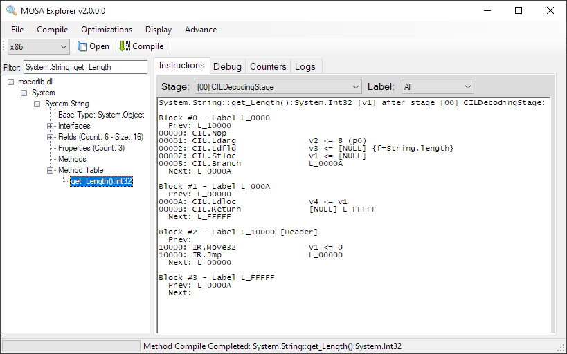

Explorer
The MOSA Explorer is GUI application used to visualize the compiler transformation of a method from the highest representation to the lowest, lowest level. The instruction stream at each stage can be viewed. In addition, specific stage logs is also available. In some cases, these logs describe why certain transforms were made.
Usage
The MOSA Explorer can be launched by executing Mosa.Tool.Explorer.
In addition, the tool can be launched from the command line with arguments:
Mosa.Tool.Explorer Mosa.BareMetal.HelloWorld.x86.dll -filter System.String::get_Length
Command Line Options
See the command line arguments for a list of available options.